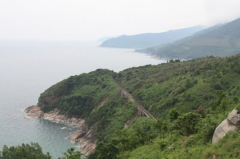
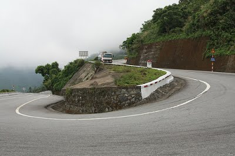
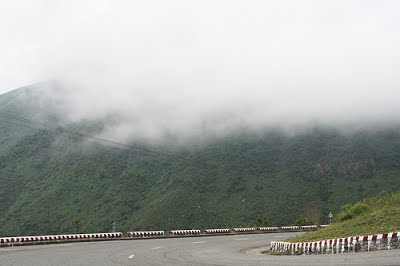
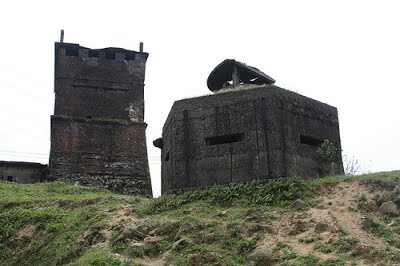

NHỮNG NÉT ĐẸP CỦA ĐÈO HẢI VÂN
Ðèo Hải Vân nổi lên trên nền nước biển xanh ngắt của biển Ðông, trải dài khoảng 20 km từ Huế đến Ðà Nẵng. Ðó là một vùng đèo cao nằm dọc theo bờ biển dài 1600km của Việt Nam. Trong nhiều thế kỉ, vùng đèo này đã tạo thành một bức tường ngăn cách giữa nền văn hoá Chàm cổ ở phía Nam và nền văn minh kế thừa của tộc Việt tại vùng châu thổ sông Hồng, là đường phân chia giữa những ảnh hưởng văn hoá từ phía bắc và phía nam châu Á.

Ngày nay, đèo Hải Vân là hàng rào khí hậu giữa vùng nhiệt đới chịu ảnh hưởng của gió mùa Nam Á là miền Nam với khí hậu 2 mùa: mùa khô và mùa mưa và miền Bắc nằm trong khí hậu cận ôn đới. Ði trên quốc lộ số 1, bạn sẽ cảm nhận được làn gió mát mơn man đồng thời thưởng thức những phong cảnh tuyệt vời trên dọc đường đi tới một trong những bãi biển đẹp nhất Việt Nam.

Từ Ðà Nẵng, theo quốc lộ số1, chúng ta vượt sông Nam Ô, kề với một làng trùng tên vốn nổi tiếng khắp đất nước là nơi sản xuất ra loại nước mắm ngon nổi tiếng. Bắt đầu từ đây, con đường dốc dần lên, như sợi chỉ trắng quấn trên triền núi xanh lục, cho tới khi lên đến đỉnh sẽ thấy toàn cảnh vịnh và thành phố bên dưới hiện ra đột ngột, đẹp đến sững sờ. Xa xa, dải cát trắng phau của bãi biển Non Nước trải rộng tới tận chân trời, vượt ra tận những tảng đá chênh vênh của Ngũ Hành Sơn.

Từ trên độ cao 496m, ngọn đèo của những đám mây đại dương này đem lại cho ta những phong cảnh đầy ấn tượng về dải bờ biển kéo dài của Việt Nam. Trên đỉnh đèo có miếu nhỏ thờ thần núi được hình tượng hoá bằng bức tượng một con hổ - vị chúa tể sơn lâm, trong khi có một số miếu nhỏ nằm dọc đường để tưởng nhớ những người gặp nạn. Rong rêu đã mọc đầy trên chiếc lô cốt - được gọi là Ðồn Nhất - do thực dân Pháp xây dựng vào năm 1826 để bảo vệ con đèo chiến lược này. Nó bền bỉ bám trên sườn núi hàng chục năm nay và từ đây có thể kiểm soát được suốt dọc con đèo từ cả hai phía. Ðồn Nhất đã chứng kiến biết bao cuộc nổi dậy của nhân dân Việt Nam trong suốt thời kì đấu tranh chống thực dân Pháp đô hộ. Sau đó lô cốt này được chuyển sang tay quân Mỹ và quân đội nhân dân Việt Nam đã có lần sử dụng thành lũy này để nã pháo vào Ðà Nẵng.

Con đường bắt đầu xuống dốc, xuôi về thành phố Huế. Nhìn từ trên cao, con đường trông như sợi chỉ chạy ngoằn ngèo với rất nhiều khúc ngoặt gây cho ta cảm giác con đường kéo dài vô tận. Nhưng chỉ đến khi bạn bắt đầu mất hy vọng thì ô tô lượn quanh khúc ngoặt cuối cùng và một phong cảnh hết sức ngoạn mục hiện ra trước mắt bạn: bãi biển và làng chài Lăng Cô.
Cho dù là chặng nghỉ chân giữa chừng hay là điểm cuối cùng của chuyến đi, Lăng Cô là địa chỉ tuyệt vời của chuyến vượt đèo Hải Vân. Từ đây trở đi, trên những con đường đồng bằng, bạn có thể thoải mái ngắm nhìn những cánh đồng lúa bát ngát cùng những làng quê thanh bình dọc trên hai con đường dẫn tới thành phố Huế.